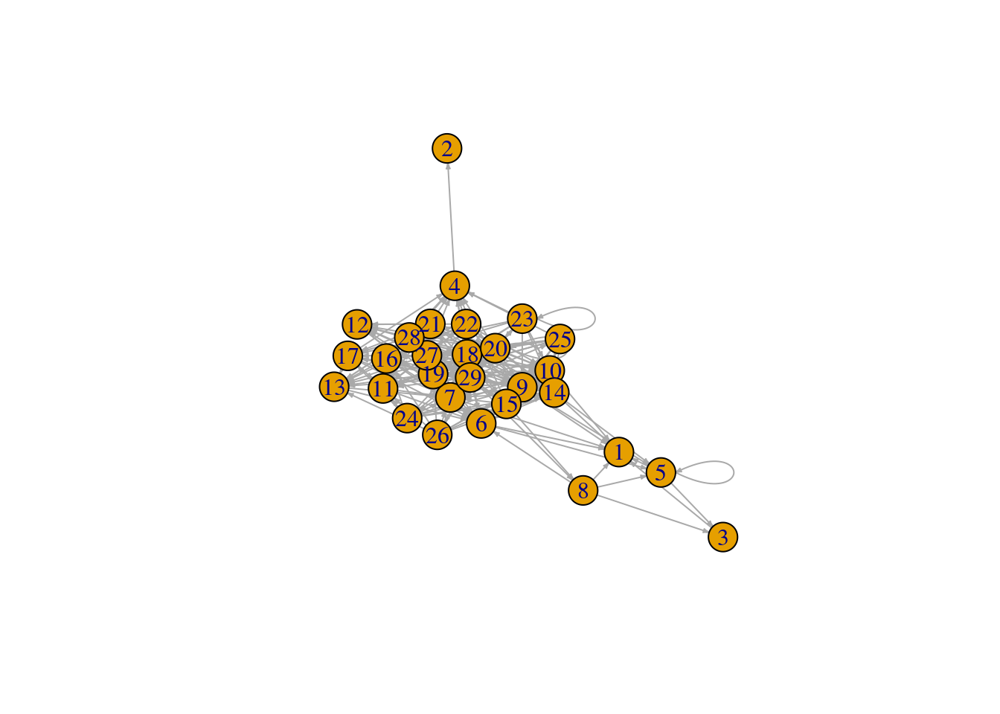

Networks as graphs
As we have seen, edge lists and adjacency matrices are convenient ways in which interaction networks can be represented. However, more flexible formats for representing networks are needed when we want to perform more complex actions on networks, or even just for visualisation purposes.
The field of mathematics has been studying networks for decades. The mathematics subfield of Graph Theory has developed extensive frameworks to analyse and manipulate mathematical objects known as graphs. Graphs, as networks, are simply collections of nodes and links between them. So, we can represent networks as graphs and take advantage of the mathematical framework of Graph Theory to study them.
Several computer programming libraries have been especially developed to construct and manipulate graphs. These libraries make it easy and widely accessible to work with and study networks. Amongst the most popular the NetworkX complex networks library for Python and the igraph package for network analysis, which can be used on several platforms, including R. For the rest of this course we will be using igraph to create and manipulate ecological networks.
To install and load igraph on your R workspace runt the following code:
## Install igraph
install.packages("igraph")
## Load igraph into workspace
library(igraph)To start getting familiar with igraph we will start by creating some simple networks.
Weaving networks from scratch
The following instructions will walk you through a simple example in which you will create a small network:
1.- First create a vector called species with the numbers from 1 to 10
2.- Then create a network by adding the species as vertices to an empty graph
3.- Create an interaction between species 5 and 7
4.- Create 10 other interactions between any species you want
require(igraph)## Loading required package: igraph##
## Attaching package: 'igraph'## The following objects are masked from 'package:stats':
##
## decompose, spectrum## The following object is masked from 'package:base':
##
## union# Ten species
species <- 1:10
network <- graph.empty() + vertices(species)
# Link between species 5 and 7
network[5,7] <- 1Converting matrix to igraph object
If we have an adjacency matrix and we want an igraph object representing the same network, without the need to create the network from scratch, igraph offers the functionality of creating graphs from adjancecy matrices. Just use the function graph.adjacency(A), where A is your adjacency matrix.
Check out the documentation for graph.adjacency, including additional parameters that you can use to create your network. Similarly, to create a graph from an edgelist, you can use the graph_from_edgelistfunction from igraph.
We can convert the network for the Benguela ecosystem, into and igraph object using the following code.
library(RCurl)
x <- getURL("https://raw.githubusercontent.com/seblun/networks_datacamp/master/datasets/benguela.tro")
benguela.EL <- read.table(text = x)
benguela.EL <- as.matrix(benguela.EL)
# Create an adjacency matrix called benguela.AM, containing only zeros
benguela.AM <- matrix(0, max(benguela.EL), max(benguela.EL))
# Introduce ones to the matrix to represent interactions between species
benguela.AM[benguela.EL] <- 1
# Convert Benguela adjacency matrix to an igraph network
benguela.network <- graph.adjacency(benguela.AM)Drawing networks
The network representations we have explored so far are great for manipulating them and calculating properties over them. However, to gain an intuitive idea of what the networks we are analysing look like, or if we want to show them in publications or websites, it is sometimes desirable to draw them as graphs: with dots representing nodes/species and lines connecting them representing links/interactions. In pretty much the same way we saw in the introductory video.
Of course, drawing a network on a whiteboard using coloured pens is easy. Doing that on a computer or writing code in R to do it, might be more of a challenge. Fortunately, libraries such as igraph offer these functionalities. The plot function from the igraph library takes as an input an igraph object and produces a graphical representation of the network.
Let’s try it!
# Plotting your network
plot(network)If the instructions above worked well you will be able to see something like this:

What about the Benguela ecosystem network…
# Plot the Benguela food web
plot(benguela.network, edge.arrow.size = 0.2)
This representation of the Benguela web looks a bit messy. Don’t worry! We will explore ways of making networks more beautiful later on.
Graph connectivity / Food web connectance
Now that we have an igraph representation of our network(s), we can calculate several of its properties. If we think of the network we just constructed as a food web, we can calculate the number of species and links (what we did previously on adjacency matrices) thus:
# number of species
S <- vcount(network)
# number of interactions
L <- ecount(network)The functions vcount and ecount from the igraph library let you count the number of nodes and links on a graph, respectively.
Having counted the number of species and links in our newly built food web, we can start calculating more interesting prorperties such as connectivity. In food webs connectivity can be quantified as the average number of interactions per species (L/S, i.e. the mean number of interactions species in the network have), and Connectance (L/S2, i.e. the fraction of links present in the network out of all possible links).
# average number of interactions species
L.S <- L/S
# food web connectance
C <- L/S^2In the case of the adjacency matrix (A) representation of a food web, we know that it contains all the links in our network represented by 1’s. Hence, the number of links in our network is simply sum(A). Similarly we have also learnt that the number of species (at least for a food web) equals the number of rows (or columns) in the matrix: nrow(A).
Hence, the connectance of our food web represented by matrix A is calculated as: sum(A)/(nrow(A)2). Try this on your network above and you should obtain the same quantity we now have in C. HINT: To obtain the adjacency matrix representation of an igraph object you can use the as_adjacency_matrix function.
For the Benguela network we can calculate connectivity properties:
# Calculate connectance
connectance <- ecount(benguela.network) / vcount(benguela.network)^2
# Print connectance va
print(paste0('Connectance of Benguela network =', round(connectance,2)))## [1] "Connectance of Benguela network =0.24"# Calculate number of links per species
links.per.species <- ecount(benguela.network) / vcount(benguela.network)Calculate connectance for bipartite networks
We have learnt how to calculate the connectance of ecological networks in general: it is simply the fraction of realised links out of the possible ones. Additionally, we have explored methods to quantify connectance in food webs based on the information extracted either from the adjacency matrix or the igraph representation of our networks.
We have also learnt that the way in which bipartite networks are represented in incidence matrices is fundamentally different from the way in which we represent food webs in adjacency matrices. Keeping that in mind, we need to find out ways of finding out what would be: 1.- the correct way of finding out the number of species in a bipartite network from our matrix representation; and 2.- the total possible number of links in a bipartite network (remember that links between species in the same group are ‘forbidden’).
Using the fish-anemone interaction network that we used previously, we can calculate the total number of possible links as the product of the number of species on one side (i.e. fish) times the number of species on the other side (i.e. anemone). This will give us the total number of links if every fish species would be found to interact with each anemone species. Connectance of this network is then simply the total number of links divided by this quantity.
library(RCurl)
y <- getURL("https://raw.githubusercontent.com/seblun/networks_datacamp/master/datasets/anemonefish.txt")
anemonef <- read.table(text = y)
names(anemonef) <- paste("A", 1:10, sep = "")
row.names(anemonef) <- paste("F", 1:26, sep = "")
anemonef <- as.matrix(anemonef)
# Calculate conectance of anemoref
bipartite.connectance <- sum(anemonef) / (dim(anemonef)[1] * dim(anemonef)[2])Igraph lets us manipulate bipartite networks in a similar way to unipartite ones. We can load the incidence matrix above using the following instruction:
anemonef.network <- graph_from_incidence_matrix(anemonef, directed = TRUE, mode = 'in')And calculate its connectance thus:
# Calculate conectance of anemoref
bipartite.connectance <- ecount(anemonef.network) / (sum(V(anemonef.network)$type) * (vcount(anemonef.network) - sum(V(anemonef.network)$type)) )As a fun excercise you can try and calculate the average number of links per species in this network!
Now that we are familiar with the basics of ecological networks and how to create them and manipulate them in R, let’s do some ecological networks analysis!